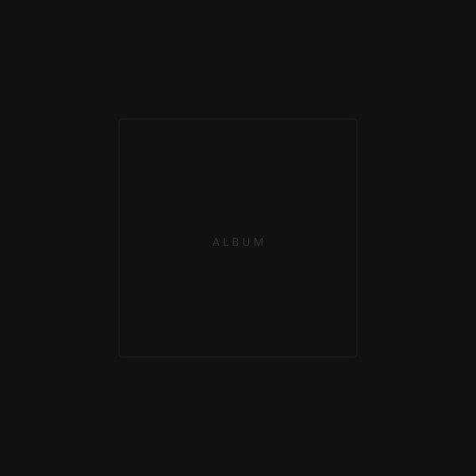

1st
2012
atmospheric soundscapes
Hi, I'm Pomodoro JP – a Japanese-based music producer creating atmospheric soundscapes, club beats, and Vocaloid-driven melodies.
I've released two mini albums digitally, and I'm grateful that listeners from around the world have been enjoying my tracks little by little.
My music is meant to accompany moments of focus, introspection, or simply to color everyday life.